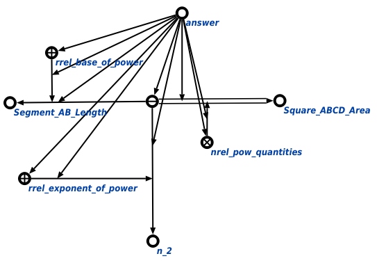

Задачей scp-программы выполнения логического вывода является выполнение логического вывода. Первым входным параметром данной scp-программы является узел логического утверждения, которое должно быть применено к некоторому объекту, вторым - некоторый объект, к которому применяется утверждение, третьим - множество, содержащее в себе результат выполнения логического вывода, то есть некоторые сгенерированные знания, четвёртым - комментарий о результатах выполнения scp-программы. В ходе выполнения программы явно указывается связь со следующими ключевыми узлами: порядковыми атрибутами 1' и 2' , уточняющими узел вопроса решаемой задачи, атрибутами если' и то', уточняющими связку импликативного утверждения, логическими операторами импликация* и эквиваленция*, множествами атомарных формул, обладающих свойствами атомарного существования или атомарного существования и единственности, а также множествами арифметических или тригонометрических операций, элементы которых могут появиться после выполнения логического вывода. Ниже представлены результаты выполнения процедуры:
